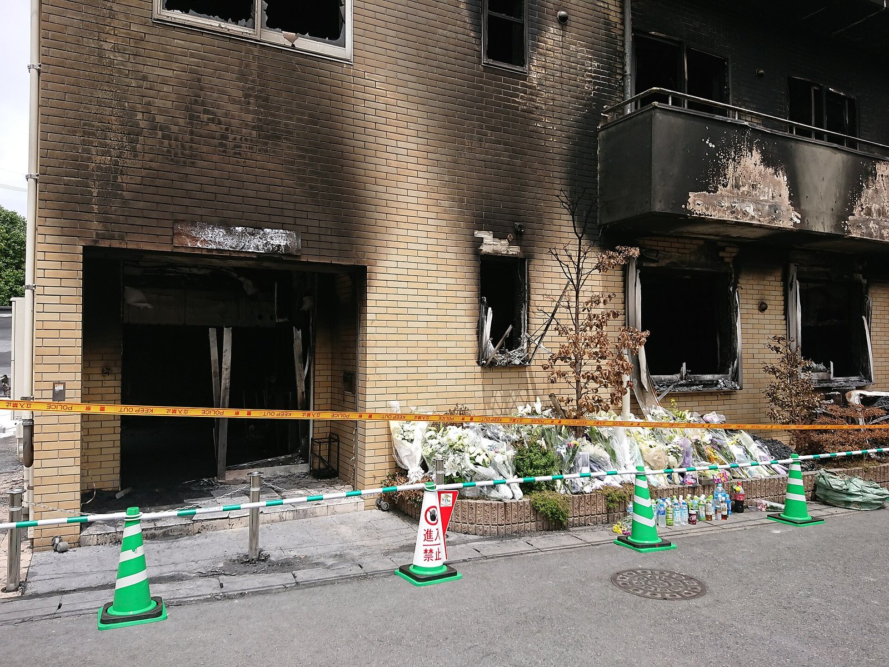

一个时代的落幕
2019 年 7 月 18 日上午，一名男子闯入京都动画第 1 工作室，泼洒汽油并纵火。 当时馆内约有 74 人正在工作。大火最终带走 36 条生命，另有 33 人受伤。
事件概况
Facts- 时间
- 2019 年 7 月 18 日 上午 10 时 31 分左右（日本标准时间）
- 地点
- 京都市伏见区桃山町因幡 15-1，京都动画第 1 工作室（地上三层）
- 伤亡
- 36 人死亡、33 人受伤（含被严重烧伤的嫌疑人）；事发时馆内约 74 人
- 损失
- 三层建筑全烧，大量原画、设定资料与制作设备被烧毁
- 司法结果
- 2024 年 1 月 25 日京都地裁宣判死刑；2025 年 1 月 27 日死刑判决确定
- 善款
- 来自日本国内外的捐款合计约 33 亿 4138 万日元（2019 年 12 月确定），全部用于遇难者与遗属、伤者
经过
The Day起火
一名男子进入第 1 工作室一层，泼洒汽油并点燃。汽油蒸气在室内迅速引燃，建筑内部发生爆燃式燃烧，浓烟沿楼梯向上蔓延。
报警与出动
附近居民发现烟雾后报警。消防与警察很快赶到，但火势与浓烟使进入建筑救援极为困难，馆内人员一度只能从窗户与屋顶等待救援。
33 人确认死亡
火灾在当天被控制。现场确认 33 人死亡，另有多人重伤送医。此后数日，在医院离世的人数继续增加。
死亡人数升至 36 人
最终确认 36 人遇难、33 人受伤。三层建筑被完全烧毁，大量原画、设定与资料无法找回。嫌疑人本人也严重烧伤，被警方控制。
起因
Motive据日本警方与法院公开的信息，嫌疑人青叶真司（案发时 41 岁）长期抱有“自己的小说被京都动画盗用”的妄想， 并曾为此与公司有过接触。案发当天，他携带汽油前往京都动画第 1 工作室，在建筑内泼洒并点火。
这不是一起有明确诉求的纠纷，而是一场由妄想驱动的、针对不特定多数人的袭击。 2023 年 9 月开庭后，京都地裁围绕其刑事责任能力进行了审理，并在 2024 年 1 月认定其具备责任能力， 判处死刑。
本页只记录已公开的事实与司法结论，不描述具体作案手法，也不还原现场细节。
司法进程
Justice案发
第 1 工作室被纵火，嫌疑人因严重烧伤被警方控制，随后长期住院治疗。
逮捕
伤势恢复到可以接受调查后，京都府警以杀人及放火等嫌疑将其正式逮捕。
起诉
京都地检以杀人、杀人未遂、现住建筑物放火等罪名提起公诉。
首次开庭
京都地裁开始审理，焦点之一是被告是否具备刑事责任能力。
一审死刑判决
京都地裁认定其具备责任能力，判处死刑。被告随后向大阪高等裁判所提出上诉。
撤回上诉，判决确定
被告撤回上诉，死刑判决由此生效。其辩护人随后提出“撤回无效”的申请。
大阪高裁驳回申请
大阪高等裁判所驳回辩护方关于撤回无效的主张，一审判决维持。
事件的影响
Aftermath人与作品：无法补回的损失
36 位遇难者中，有长期支撑京阿尼画面的角色设计与色彩设计池田晶子、监督武本康弘、 角色设计西屋太志、监督与原画木上益治等创作者。大量原画、分镜与设定资料随建筑一起被烧毁， 有些作品的原点就这样消失了。
公司与重建：继续画下去
第 1 工作室的建筑此后被拆除。公司一度停止制作，但在各方的支援下重新运转： 2020 年 9 月《紫罗兰永恒花园 剧场版》上映，2021 年《小林家的龙女仆 S》播出， 2024 年《吹响！上低音号 3》与 2025 年《CITY THE ANIMATION》先后面世。
业界与制度：安全成为公共议题
事件之后，日本动画行业开始更认真地讨论工作室的消防设施、门禁与访客管理、应急预案， 以及动画师长期被忽视的劳动环境。原本只在行业内部流传的问题，第一次成为社会公共议题。
社会与记忆：33 亿日元的善意
来自日本国内外的捐款合计约 33 亿 4138 万日元，全部用于遇难者家属、伤者与受创员工。 每年 7 月 18 日，仍有粉丝到宇治与伏见献花；2020 年一周年时，公司在京都举行了追悼仪式。
追悼
In Memory

我们记录这场火灾，不是为了反复咀嚼痛苦，而是为了记住那些没能画完的线稿， 记住那间工作室里普通的上午——有人在画原画，有人在讨论分镜，有人只是去接一杯水。 然后记住：仍然在画的人，值得被好好保护。
大火过后的京都动画虽然得到了一定程度的重建，但因人才的逝去和原稿的丢失，公司并不能马上恢复至其巅峰时期。近年来京都动画公司产出的动画数量远不比大火之前，质量也都参差不齐。现在的人们已经不会对每一部京阿尼新作都喊着“京阿尼出品，必属精品”的口号了。似乎，属于京阿尼的时代已经落幕了，但我们仍然铭记着京阿尼，对动画的热爱不曾磨灭，当然我们也希望京阿尼能够再次产出许多优质作品，重回他的巅峰！